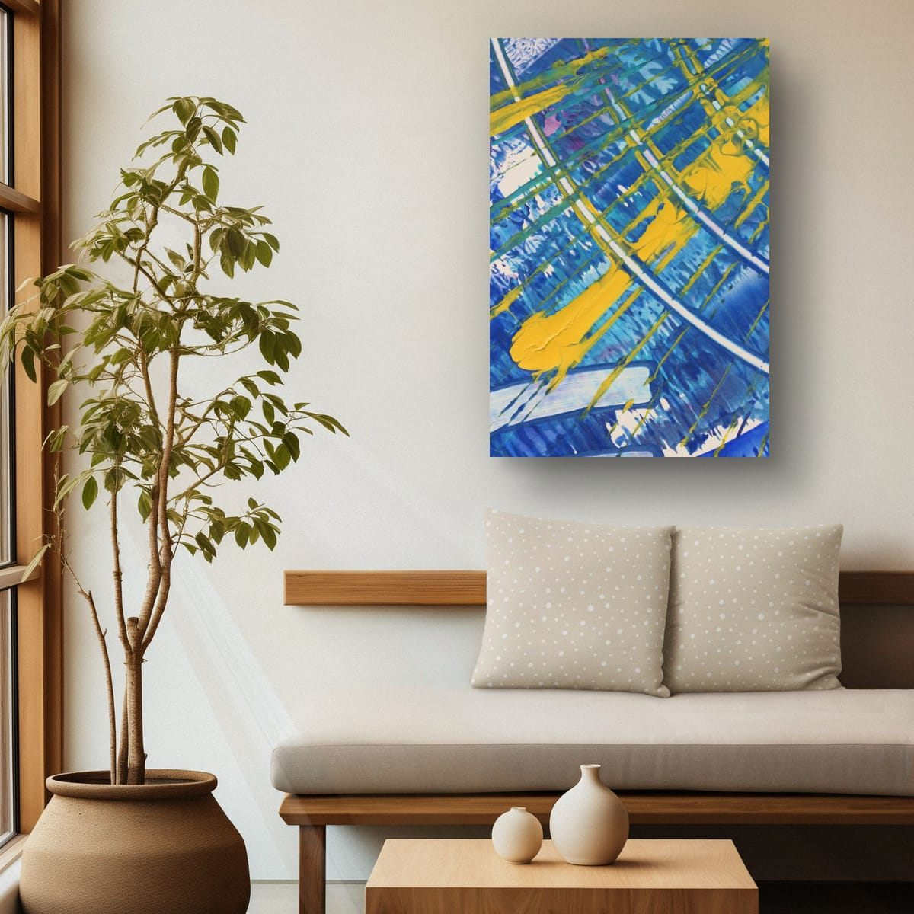
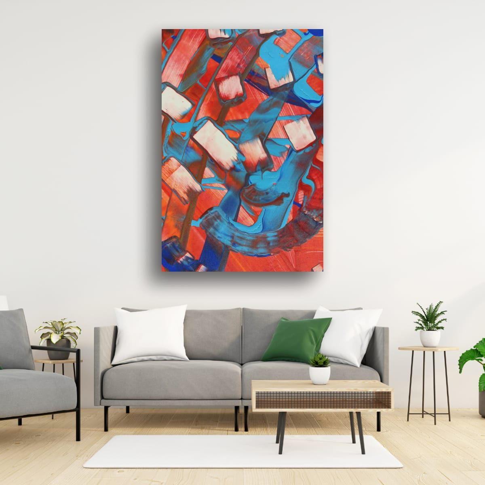
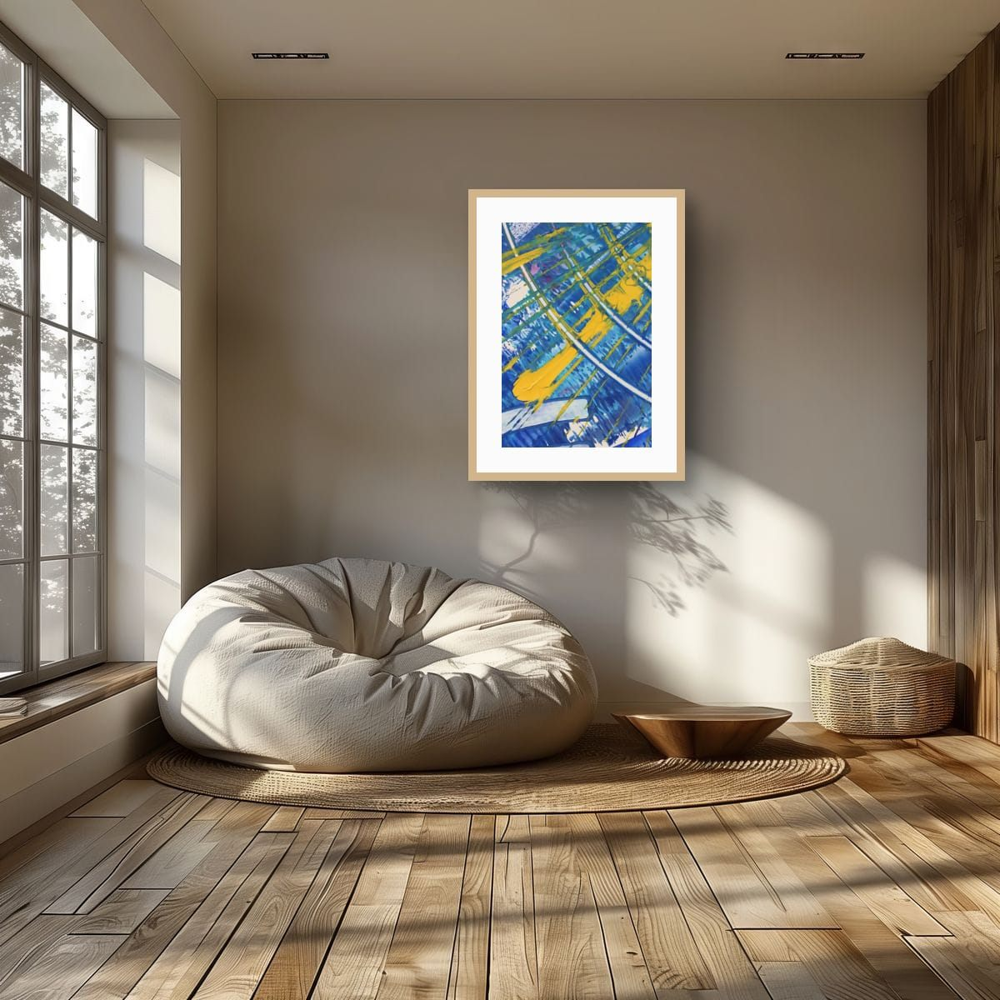
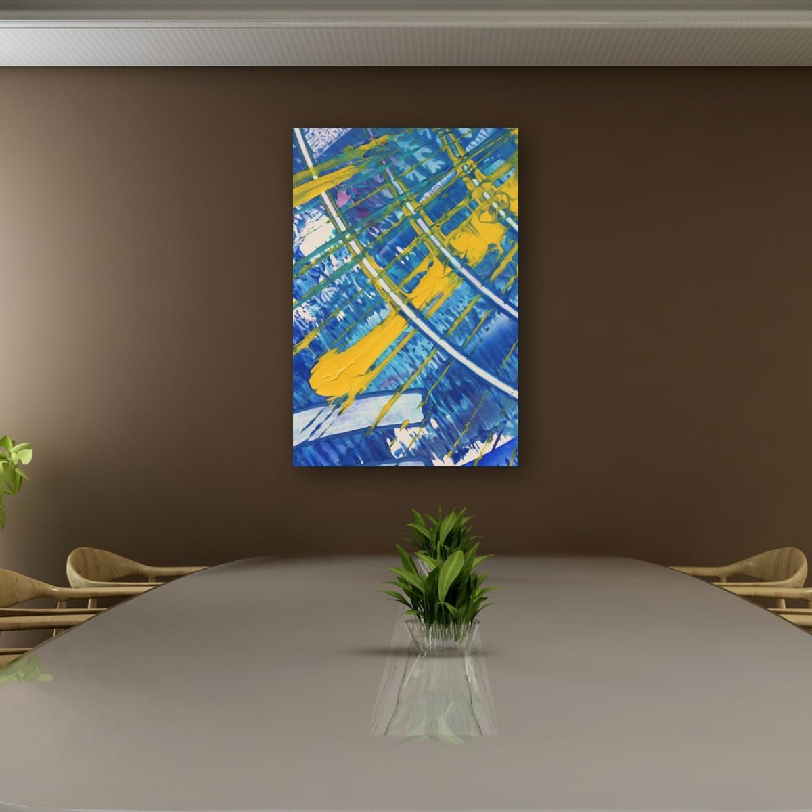

The short answer
Light walls let color do the talking, so they suit bold, saturated art. On bright, cool whites, almost any color works and contrast looks crisp. On warm whites, creams and beige, warm and earthy colors feel at home, and cool blues and greens add fresh contrast. What does not work well is pale, low-contrast art, which washes out on a light wall.
Not all whites are the same
Look at your wall next to a sheet of printer paper in daylight. If the wall looks the same or slightly blue, it is a bright or cool white. If it looks creamy, yellowish or slightly pink, it is a warm white. Beige, sand and taupe are simply deeper versions of the warm side.
Bright white walls
A bright white wall is the closest thing to a gallery. Strong colors look exactly as intended, and black frames look sharp. Because there is nothing to compete with, you can go large and bold. The risk is the opposite of a dark wall: too little color, and a white room feels clinical.

Warm white and cream
Warm whites feel softer and more lived-in. Warm colors, reds, oranges, ochres and golds, blend in naturally and make the room feel cozy. Cool colors, blues and greens, stand out more and make the room feel fresher. Both approaches work. Decide whether you want the art to settle in or to stand out.

Beige, sand and taupe
Deeper warm neutrals have more presence, so art needs enough contrast to stand apart from the wall. Deep blues and greens look rich and grounded on beige. Rust, terracotta and burnt orange create a warm, earthy room. Bright yellow and white accents bring light into a deeper taupe.

Avoiding a washed-out look
The most common problem on light walls is not the wrong color, it is too little contrast. Pale art in thin, light frames on a white wall can look faded, as if it is disappearing. Three things fix it:
- Stronger color or value contrast in the art itself: deep tones, dark areas, or saturated accents.
- A defined edge: a black or dark wood frame, or a print with a clear border, separates the art from the wall.
- Enough size: on a large white wall, small art looks even smaller. Go up a size, or group pieces together.
Light changes white
A white wall is never only white; it takes on the color of the light. Warm light bulbs make white walls look creamy and make warm art glow. Cool daylight bulbs make walls look crisper and blues look brighter. North-facing rooms in the northern hemisphere make whites look slightly gray and cool; south-facing rooms make them look warm. If you can, look at art on your wall at the time you use the room most.
Frames on light walls
- Black frames give definition, especially on bright white.
- Natural wood frames suit warm whites and beige.
- White frames on a white wall look minimal and let the image float. Add a mat for depth.
- Gold or brass looks warm and elegant on cream and beige.
Checklist
- Check whether your white is cool or warm.
- Choose saturated art; avoid pale, low-contrast pieces.
- Warm walls: warm colors to blend in, cool colors to stand out.
- Beige and taupe: make sure the art contrasts with the wall.
- Pick the frame to define (black), warm (wood) or float (white).
These are general guidelines, not strict rules. Every room is different, and a few inches either way will not ruin a good wall. Room scenes are digital mockups; the artworks are details of real hand-painted paintings. Prints are offered in several sizes and formats on the shops linked from each artwork page.